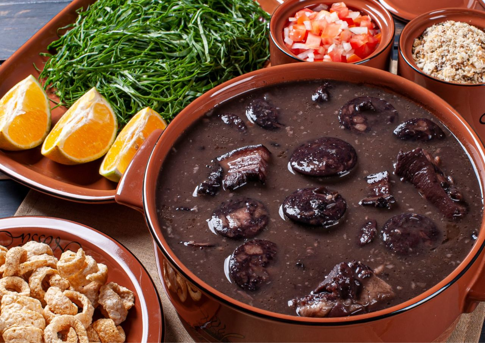

Feijoada

•
A feijoada é um prato tradicional da culinária brasileira, conhecido por sua riqueza de sabores e ingredientes. É composta principalmente por feijão preto cozido com uma variedade de carnes, acompanhado de arroz branco, couve refogada, farofa, laranja e outros complementos.
Informação Nutricional
Valor calórico: Uma porção generosa de feijoada completa pode conter entre 700 a 1000 calorias, dependendo das quantidades e dos cortes de carne utilizados, bem como dos acompanhamentos adicionados.
Proteínas: A feijoada é uma fonte rica em proteínas devido às várias carnes utilizadas, como carne seca, costela de porco, linguiça, bacon e paio. Uma porção pode fornecer entre 30 a 50 gramas de proteína, dependendo do tamanho da porção e dos tipos de carne utilizados.
Carboidratos: O feijão preto é uma boa fonte de carboidratos complexos, fornecendo energia de liberação lenta. Uma porção de feijoada completa pode conter entre 50 a 80 gramas de carboidratos, principalmente provenientes do feijão e do arroz.
Gorduras: As carnes utilizadas na feijoada podem adicionar uma quantidade significativa de gordura ao prato, especialmente o bacon e as linguiças. Uma porção pode conter entre 30 a 50 gramas de gordura, dependendo das quantidades e dos cortes de carne utilizados.
Fibras: O feijão preto é uma excelente fonte de fibras dietéticas, que são importantes para a saúde digestiva. Uma porção de feijoada completa pode fornecer entre 10 a 15 gramas de fibras, dependendo do tamanho da porção e da quantidade de feijão utilizada.
Vitaminas e Minerais: A feijoada completa pode fornecer uma variedade de vitaminas e minerais essenciais, incluindo ferro, zinco, potássio, vitamina B12 e vitamina C, dependendo dos ingredientes utilizados e dos métodos de preparo.
R$45,00 | Prato feito
« Voltar ao menu